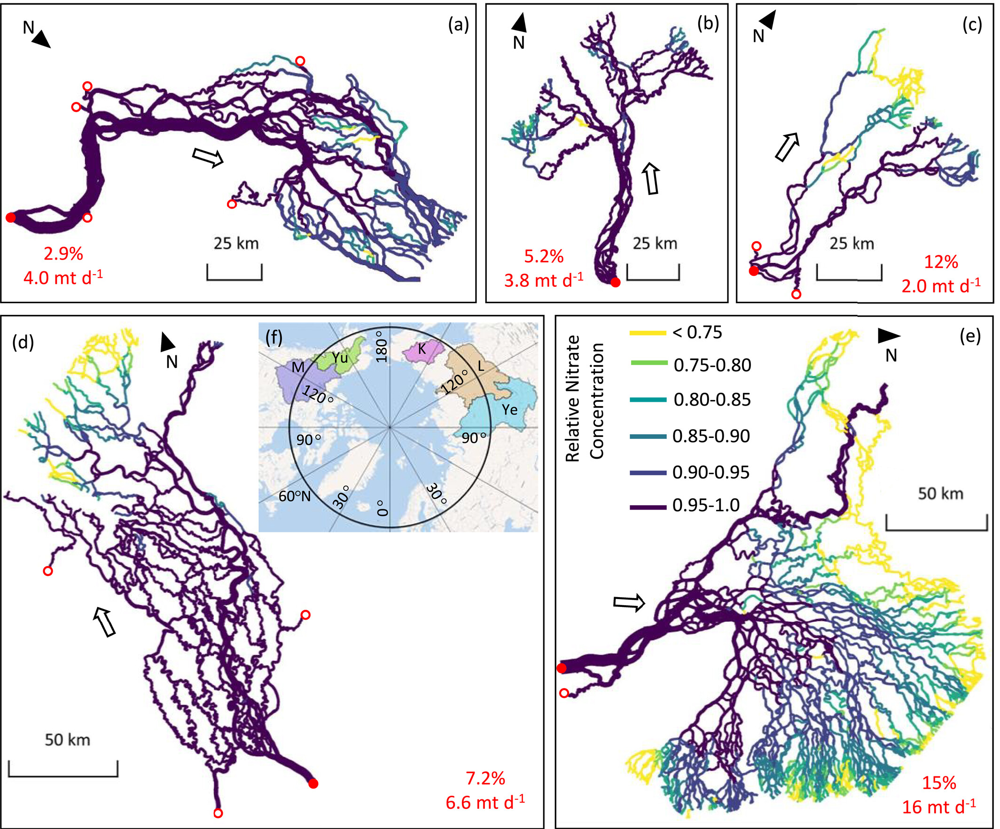

Note
Go to the end to download the full example code
Seasonal and Morphological Controls on Nitrate Retention in Arctic Deltas
Deon Knights, Anastasia Piliouras, Jon Schwenk, Jayaram Hariharan, and Christopher Russoniello
This publication made use of RivGraph’s flux modeling to estimate nitrate retention in Arctic river deltas.
# Maps of nitrate concentration for the (a) Yenisei, (b) Yukon, (c) Kolyma,
# (d) Mackenzie, and (e) Lena deltas. Hollow arrows represent general flow
# direction. Concentrations at each link are relative to the maximum load
# entering each delta. Mean discharge, temperature, and inflow concentration
# measured at the delta apices (solid red dots) by the Arctic Great Rivers
# Observatory were used to parametrize the model. Hollow red dots represent
# ungauged inlet nodes. The thickness of each link is linearly weighted by
# discharge with the thickest and thinnest lines representing discharges of
# 19,300 and 0.129 m3s−1, respectively. Values in red are simulated retention
# rates in percent and metric tons per day, respectively. (f) Map of the
# watersheds drained by the Kolyma (K), Lena (L), Mackenzie (M), Yenisei (Ye),
# and Yukon (Yu).
Total running time of the script: ( 0 minutes 0.000 seconds)